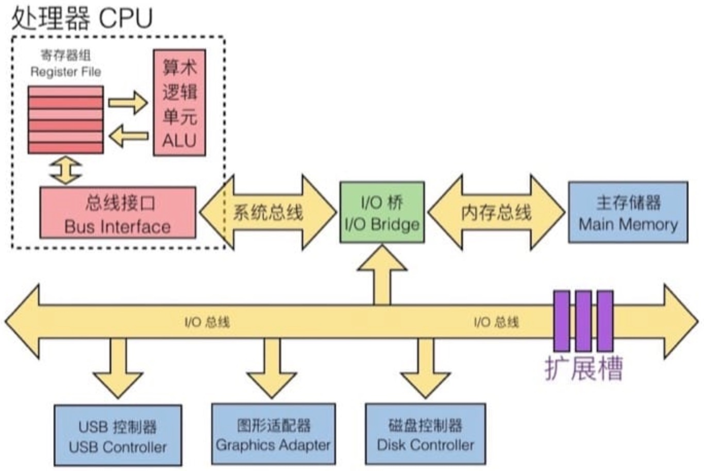
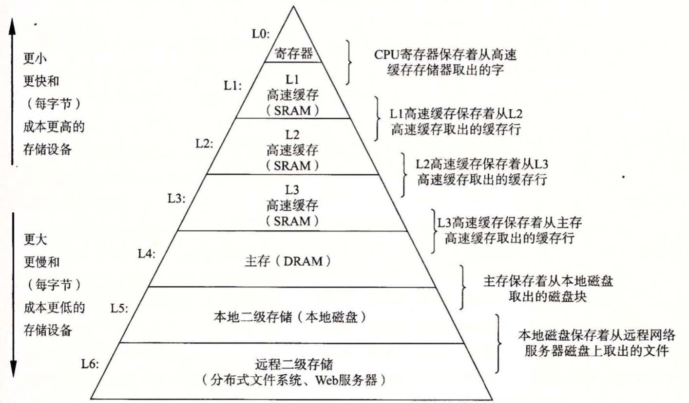

读CSAPP(3) - 存储器层次结构
文章目录
了解硬件
随机访问存储器（Random-Access Memory，RAM）
RAM分两类，静态（SRAM）的和动态的（DRAM），SRAM要比DRAM更快，价格也更高。 SRAM用于高速缓存存储器，可以在cpu芯片上，也可以在片下。DRAM用来作为主存以及 图形系统的帧缓冲区。无论哪种RAM一旦断电，所有信息都会丢失。
磁盘存储
磁盘存储数据的数量级更大，比RAM大得多，但读取信息要比DRAM慢10w倍，比SRAM慢100w倍。 磁盘分为机械硬盘和固态硬盘，机械硬盘的读写速度要低于固态硬盘，但价格低廉。
总线

局部性
存储结构
